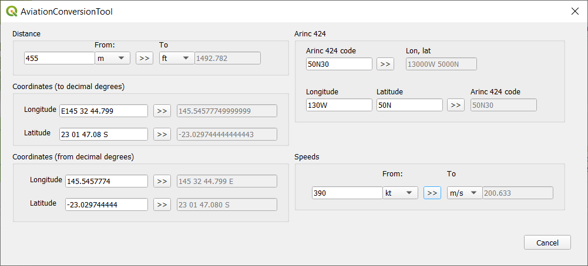

Aviation Conversion Tool plugin allows user to convert values such as distance, coordinate and speed among various formats and units of measure that are commonly used in aviation industry.
GitHub repository: AviationConverterTool
To convert value from one unit of measure to another one or from one format to another one just:
In case source value is not valid or in not supported format (example longitude), message with error will be shown, for example:
For more information about supported coordnate formats refer to Supported coordinates formats chapter.
Supported coordinate formats:
Following coordinates format are supported when converting from DMS (degrees, minutes, second) to DD (decimal degrees):
Decimal degrees format is only allowed, examples: 23.5555, -123.5555